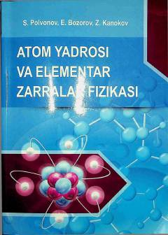

AYAtom yadrosi tuzilishi va elementar zarralar fizikasiga bag'ishlangan oliy o'quv yurtlari uchun o'quv qo'llanma.
Mazkur o'quv qo'llanmada atom yadrosining asosiy xususiyatlari, yadro kuchlari, yadro modellari, radioaktiv parchalanish qonunlari va yadro reaksiyalari batafsil bayon etilgan. Shuningdek, nurlanishning modda bilan o'zaro ta'siri hamda elementar zarralar klassifikatsiyasi va saqlanish qonunlari yoritilgan. Kitob oliy o'quv yurtlari talabalari, magistrantlar hamda soha mutaxassislari uchun mo'ljallangan.